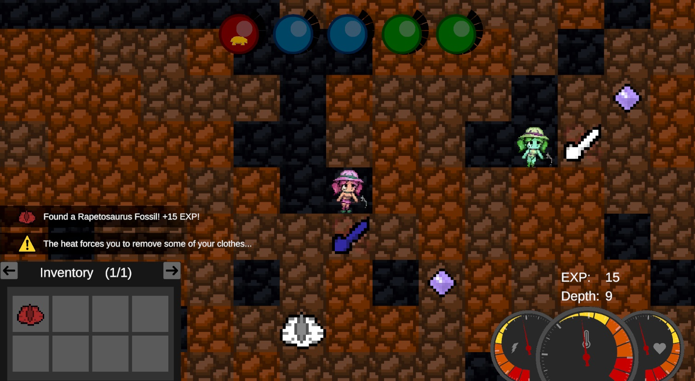
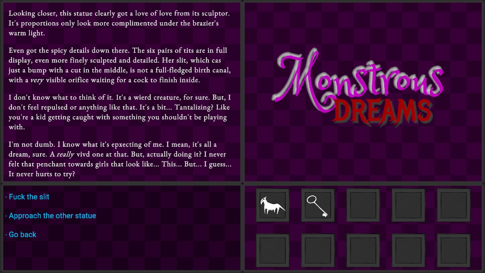

This is my safe heaven where I can post all the pornographic content I create over the years,
without the fear of any kind of corporate overlord or holier-than-thou groups
dictating the way I'm supposed to live my life. If you feel like you're facing the same situation as me,
then you're welcome!
This place will be in construction for a while, as I'm still learning webdev,
but I intend to update it regularly in the future.
I'm Lupanar, a professional programmer and an hobbyist writer. (I'm a boy btw)
I've been interested in making games since middle school, and I participated in a few game jams over the years.
As far as adult games go, I've randomly learned about them a few years ago, and I got fascinated by them ever since.
However, I never found the courage to take the plunge and actually make one until early 2026,
as the taboo factor always made me hesistate. Making them isn't quite the same as simply consuming them,
if you see what I mean.
However, I always felt a tinge of excitement at the idea of making my own smut and sharing it with others.
You know that feeling when you do something forbidden, and you only come out of it stronger?
That's what I'm talking about. So I eventually took the plunge, and even though I don't have much to show for now,
rest assured it won't stay that way for long!
Because it's fun! It's fun to break taboos and redefine the barrier of the acceptable. It's fun to talk to other
NSFW devs and writers and sharing ideas and resources with them.
It's cathartic to finally release an erotic game to the public, and receive praise by people who really get
your fetishes. (I have a praise kink ;) )
As for a more serious 'Why?'... Adult games just fascinate me.
It's incredible that such a genre exists, not just in spite of social pressure, but also just by themselves.
Like, someone woke up one day and thought:
'Yeah, I could stroke it a lil for today, ooor... I could make a series-spanning RPG franchise
about the meaning of death and the human nature, riddled with inflation, scat and monster-fucking fetishes!'
It's fascinating to see the enormous community this genre has managed to gather on places like F95Zone and whatnot.
Some people do it for fun, while others do it to explore or their newfound fetishes,
to feel like a part of a larger community of like-minded people,
or even as statement against the repressive environment they live in IRL.
People with different origins, tastes and fetishes, all there for the same purpose: To goon. And I think that's beautiful.
I love how everyone is so dead serious about it too, with all those discussions about game design and storytelling
for fucking porn games of all things. You can tell those people love what they're doing, and they're doing it in earnest.
This is the kind of breath of fresh air that's completely gone from regular gamedev nowadays.
But most importantly, it's a tool for me to express myself in the most depraved way I can. I lived my whole live
closed off from others, and I hope my work will allow me to be myself on the web, and meet like-minded individuals
who share my fetishes and sentiments.
And finally, it's a way for my to adresses some of the grievances I have with porn games in general.
So many of them do things I really don't like (in terms of game design or storytelling)
and I hope to give back a (hopefully better) game without those mistakes to the community.
Pretty much anything. The disclaimer on the home page couldn't encapsulate everything that could end up here.
I've given some of the most extreme examples you could find here,
but really, it's whatever crosses my mind at any moment.
I'll post my games and stories for your entertainment,
and I'll post some blog pages from time to time for more serious discussions.
I've been told some of the things I say tend to make people uncomfortable,
so rest assured you can just ignore them and focus on my works if you don't care about me.
I'll also try my hand at some hand-drawn stuff from time to time in the Art section (I suck at drawing >_>)
but I'll also use that section to gather any kind of picture I find funny, pretty or arousing.
You can start with my games! The entries in the Games section link to my Itch.io pages,
so you can drop by and say hi! (or tell me how I'm the worst developer ever xD )
There are also links to my ScribbleHub pages in the Stories section, if the sight of pixels humping each other
is too much for you to handle ;)